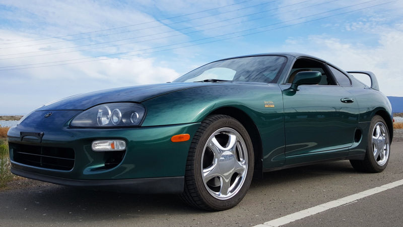
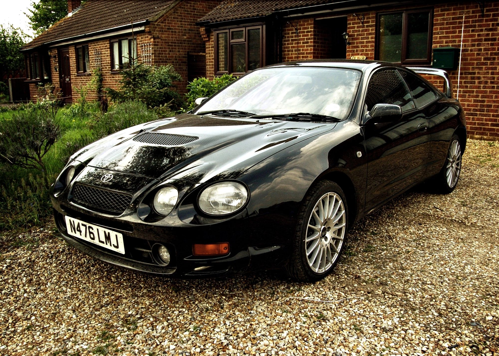
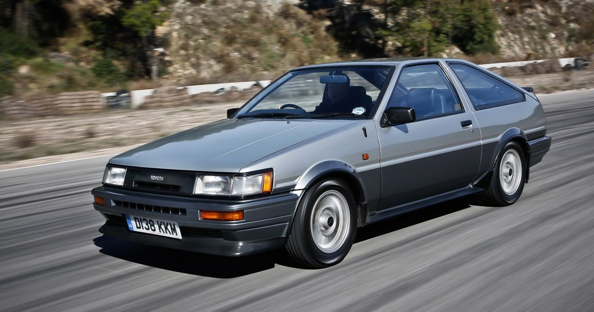
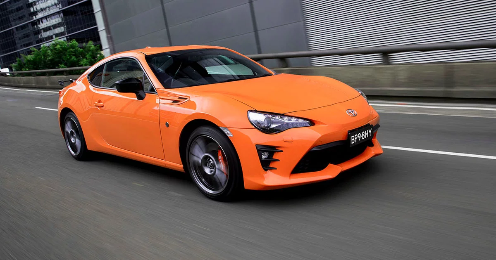
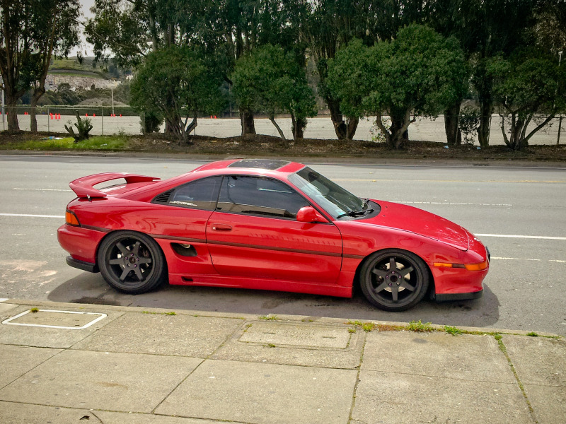

The Toyota Supra is arguably the most legendary car to come from the 1990's.
This car has gained its notoriety from the movie "The Fast and the Furious."
It is also well reknowned because of its engine, the 2JZ, which can be tuned up to 1000 horse power on stock internals.

The Toyota Celica is the predecessor to the Toyota Supra. Back in the 1980's the two cars were combined into one known as the Celica-Supra.
The Celica also has rally heritage. During the 1990's, the Celica had an all whell drive variant known as the Celica GT Four, pictured above.

The Toyota Corolla AE86 is the predecessor to the new Toyota 86. Its front engine, rear wheel drive platform makes it a great starting point to customize and tune.

This is currently the only sports car Toyota has for sale at the moment. It shares the same engine with the Subaru BRZ, which is the same exact car with minor differences.

The Toyota MR2 is often called a "Poor Man's Ferrari because it has the same engine layout as a Ferrari. It is mid engine, rear wheel drive.
The car pictured above is the second generation MR2 called the SW20, in refernce to its chassis code.